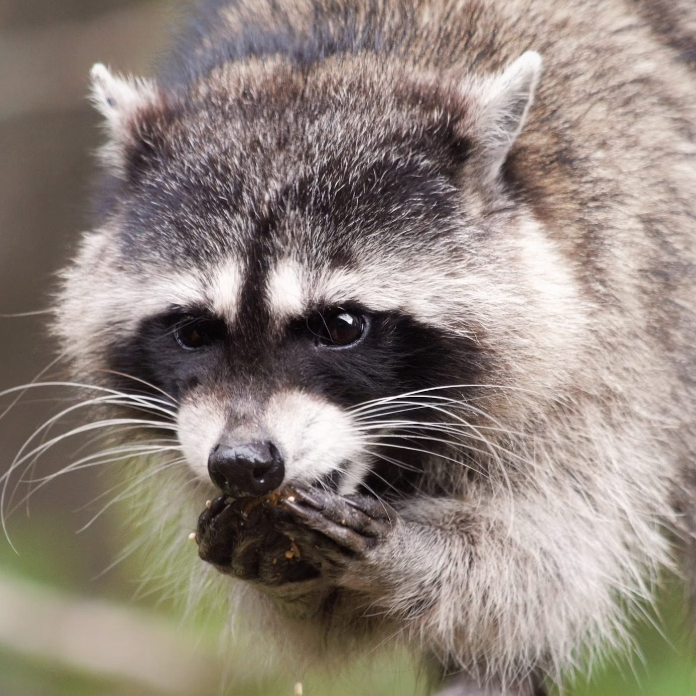
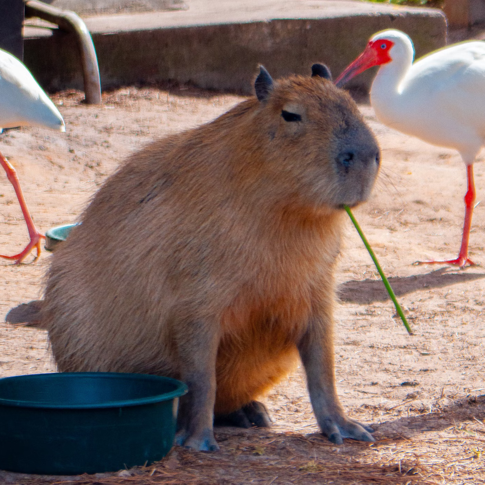

Sengångaren - Mästare i att ta det lugnt
Sengångare är kända för sitt långsamma livstempo och sin avslappnade livsstil. Denna artikel utforskar dessa facisnerande djur och varför deras långsamhet är deras största styrka.
Läs vidareTvättbjörnen - Skräpets mästerjagare

Tvättbjörnar är inte bara kända för sina svartvita ansikten, utan också för sin exceptionella intelligens och förmåga att överleva i urbana miljöer. Läs om dessa kluriga och nyfikna varelser.
Läs vidareCapybaran - Den stora och sociala gnagaren

Capybaror är de största gnagarna i världen, kända för sitt lugna temperament och sina sociala beteenden. Denna artikel tittar på varför capybaror har blivit så populära som husdjur och varför de är så omtyckta.
Läs vidare